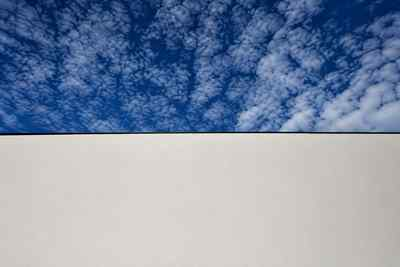

Festival del Cinema
di Locarno.
Concorso fotografico Foto Garbani SA · 70° Festival del Cinema di Locarno
In questo scatto si ritrova tutta l’atmosfera del festival: il tempo inteso come meteo e tempo di proiezione, e il telo della proiezione cinematografica. Quindi un’arte.Il commento della critica
Questa fotografia ha vinto il concorso fotografico di Foto Garbani SA in occasione del 70° Festival del Cinema di Locarno, nel 2017.
Il cielo, con le sue nuvole in movimento, incontra il grande telo chiaro della proiezione. In un’immagine essenziale si sovrappongono due significati del tempo: quello atmosferico, che cambia sopra di noi, e quello dell’attesa, prima che inizi il film.
Come ha osservato il critico, lo scatto raccoglie l’atmosfera del festival attraverso il meteo e il tempo della proiezione, trasformando il telo cinematografico in parte integrante della composizione. Un incontro tra luogo, attesa e cinema: una fotografia che diventa racconto.
ConcorsoFoto Garbani SA
Evento70° Festival del Cinema di Locarno
Anno2017
TitoloAspettando che …
AutriceMagda Bernasconi